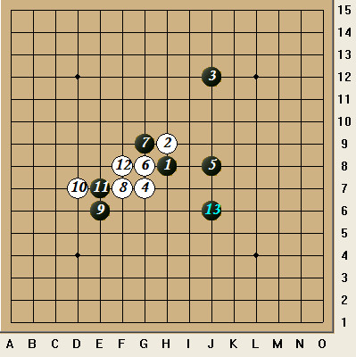

原文由 梦的幻影 发表于 2012-5-10 2:17:18 :
 同楼上疑问！第一次看到“夏止”的说法，正因此，才来欣赏这帖子的。
同楼上疑问！第一次看到“夏止”的说法，正因此，才来欣赏这帖子的。 原文也是我写的，最初发表在我的小站 http://zhan.renren.com/taoeraiwuzi 如有错误欢迎指出
我学棋时发现了一个有趣的局面，此局白胜，可是白棋要怎样胜？

黑棋在右方即将取得很大的优势的时候，白棋想速胜，只能在左方与黑棋巧妙争夺先手。
以下白棋16手是取胜的关键一手，以为这一手不仅在左方做活，还成功地牵制了黑棋右方的进攻。黑棋此时只能进攻，但是黑棋一旦进攻，白棋将有精彩的VCF。
/*760*90，创建于2012-2-9*/ var cpro_id = 'u761865';
［ 陶涛业余 于 2012-5-10 20:36:54 时花20金币送鲜花一朵］
同楼上疑问！第一次看到“夏止”的说法，正因此，才来欣赏这帖子的。［ 陶涛业余 于 2012-5-10 20:36:41 时花20金币送鲜花一朵］
［ 陶涛业余 于 2012-5-10 20:37:18 时花20金币送鲜花一朵］
引用：
原文由 梦的幻影 发表于 2012-5-10 2:17:18 :
回复三楼四楼 夏止防守的实例和讲解请见这里的第一篇 http://zhan.renren.com/taoeraiwuzi?gid=3602888498002078032&from=reblogSynFeed
［此帖子已被 陶涛业余 在 2012-5-10 20:34:32 编辑过］
只能说略懂了。。
引用：
原文由 陶涛业余 发表于 2012-5-10 20:33:47 :引用：
原文由 梦的幻影 发表于 2012-5-10 2:17:18 :回复三楼四楼 夏止防守的实例和讲解请见这里的第一篇 http://zhan.renren.com/taoeraiwuzi?gid=3602888498002078032&from=reblogSynFeed
［此帖子已被 陶涛业余 在 2012-5-10 20:34:32 编辑过］
明白了！说白了，就是当对方有活三之类的进攻手段时，将活三转成假活三的防守方法。
我所看到的资料中，很少有假活三的术语。但在一些书籍上是有这一说法的，比如彭建国的一些书上就有。
我对它的理解是：
所谓假活三，就是紧密相连的三颗同色棋子（即由连活三形成）的两端均没有对方棋子或边界直接挡住，但由于对方棋子或边界或禁手点的限制，其所在的范围内刚好只够五个交叉点可以成五。假活三，不能形成活四，但能形成冲四。
简言之，假活三，就是连活三两端刚好各有一个空着的交叉点，在此之外，要么是对方棋子或边界限制，要么是禁手点限制，从而不能形成活四，但能冲四的棋形。
 重复嗦，反省下。。。不改。。。
重复嗦，反省下。。。不改。。。
［此帖子已被 梦的幻影 在 2012-5-10 21:51:56 编辑过］
［ 有志青年 于 2012-5-10 21:56:21 时奖励此帖[金币加 100 威望加1］
其实最下五子棋牛逼的就是冲死不挡
原文由 炫飞☆冲四不挡 发表于 2012-5-11 3:03:35 :
不错不错 做长连防守大家都会 做完长连压迫空间跳挡 也有少数人会 做长连 跳挡再加上反V 就太牛B了